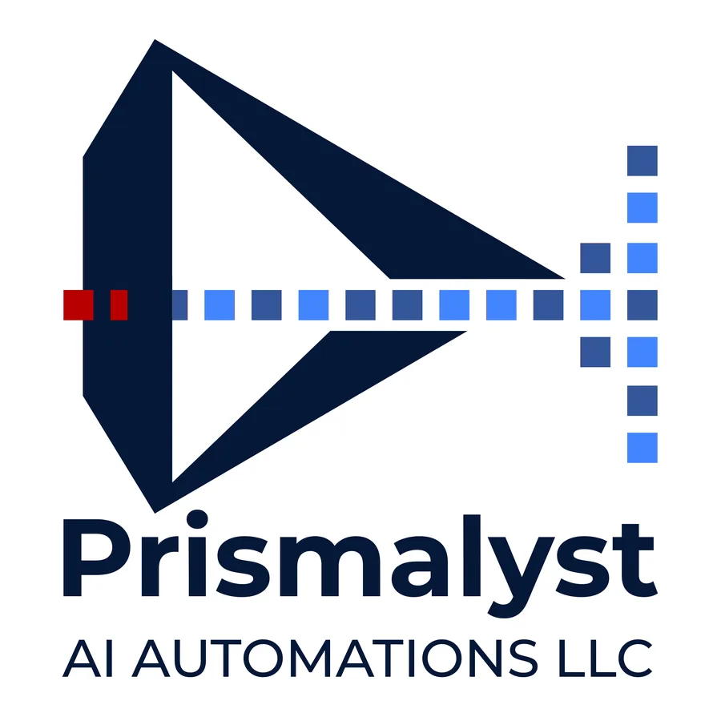
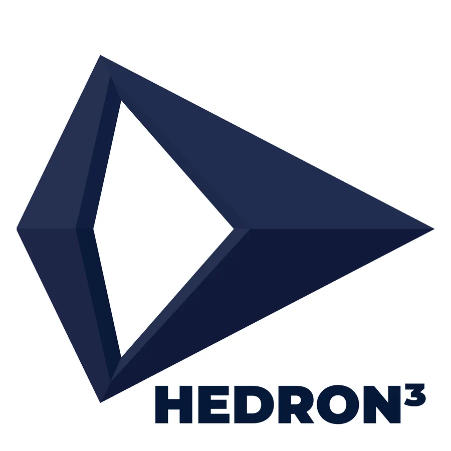
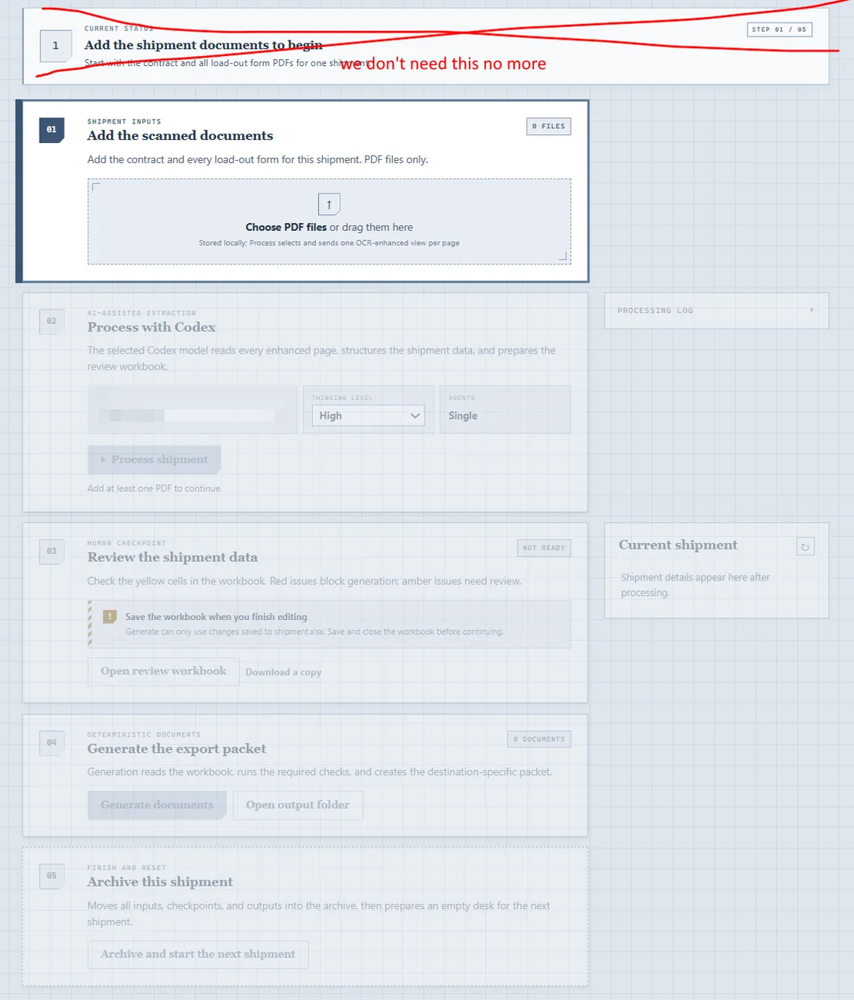
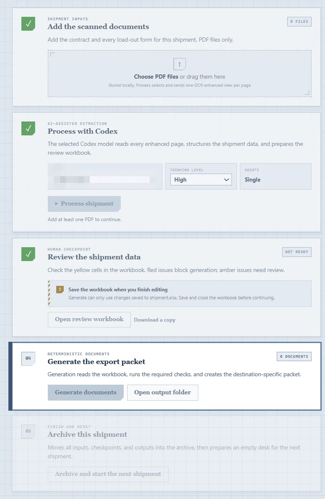
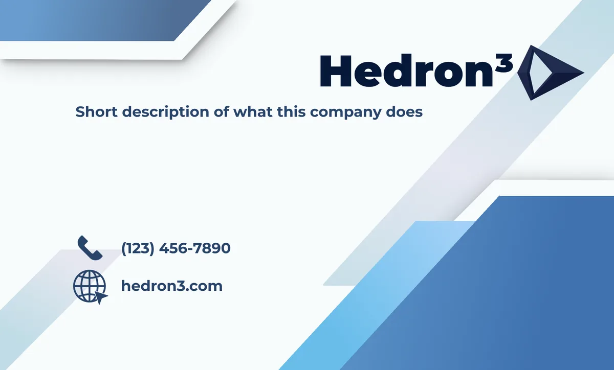
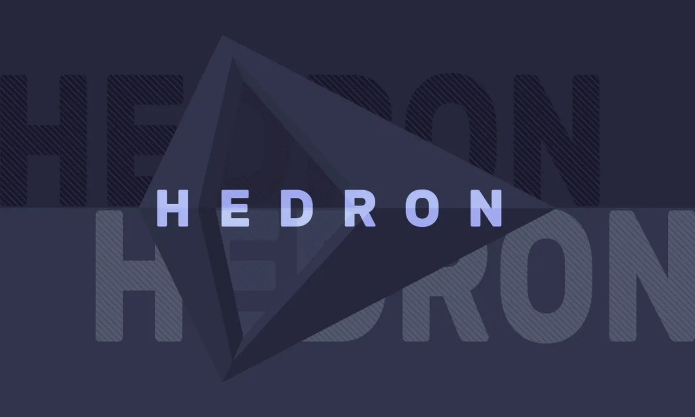

Case study 03 · B2B Workflow & Brand Identity
Hedron³: an identity and a guided workflow for export paperwork
Hedron³ is the startup I co-founded. It builds a desktop app that turns a shipment's scanned contracts and load forms into export documents like commercial invoices, packing lists, and certificates of origin, with AI-assisted extraction and a required human review.
From a busy prism to one clean shape
The first mark, made under our earlier working name, paired a prism with a dotted data trail to say "documents in, structured data out." It was literal and busy, and the dots turned to mush at small sizes. For Hedron³ I cut it down to a single faceted prism pointing forward: solid, a little technical, and legible even at favicon size.


Five steps that unlock in order
The people who prepare export paperwork aren't looking for a new tool to learn. I laid the app out as one page of five numbered steps: add documents, AI extraction, human review, generate the packet, archive. Only the current step is at full contrast. Finished steps get a green check, and later steps stay faded until you reach them.
Review is the step I cared most about. Extracted data lands in a workbook where yellow cells need checking, red issues block generation, and amber issues need a look. The AI never sends a document on its own.


Business card
The card uses the mark with a heavy wordmark and angled bands that echo the prism's facets. The back is a single, quiet lockup.


Layout, type, and logo placement are mine. My co-founder made the background pattern. The contact details and tagline are still placeholders.
The marketing site
My co-founder built most of hedron3.com. I cleaned it up and made it look better, and I polished its browser-only demo of the workflow, which runs on sample documents.